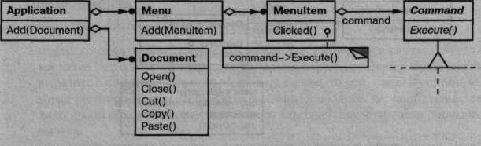
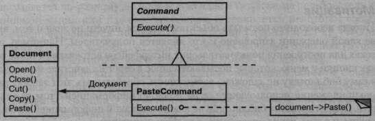
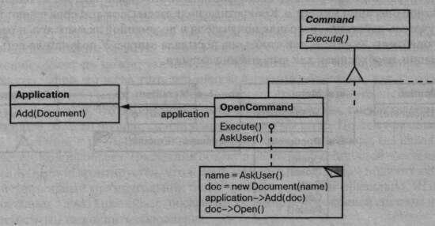
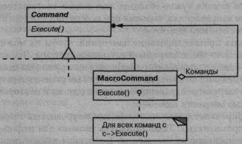
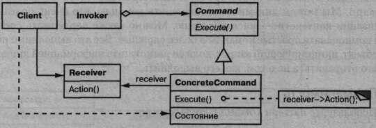
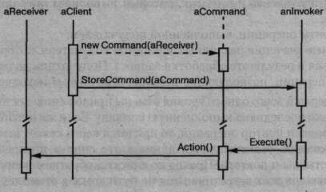

Паттерн Command
Название и классификация паттерна
Команда - паттерн поведения объектов.
Назначение
Инкапсулирует запрос как объект, позволяя тем самым задавать параметры клиентов для обработки соответствующих запросов, ставить запросы в очередь или протоколировать их, а также поддерживать отмену операций.
Известен также под именем
Action (действие), Transaction (транзакция).
Мотивация
Иногда необходимо посылать объектам запросы, ничего не зная о том, выполнение какой операции запрошено и кто является получателем. Например, в библиотеках для построения пользовательских интерфейсов встречаются такие объекты, как кнопки и меню, которые посылают запрос в ответ на действие пользователя. Но в саму библиотеку не заложена возможность обрабатывать этот запрос, так кактолько приложение, использующее ее, располагает информацией о том, что следуетсделать. Проектировщик библиотеки не владеет никакой информацией о получателе запроса и о том, какие операции тот должен выполнить.
Паттерн команда позволяет библиотечным объектам отправлять запросы неизвестным объектам приложения, преобразовав сам запрос в объект. Этот объект можно хранить и передавать, как и любой другой. В основе списываемого паттерна лежит абстрактный класс Command, в котором объявлен интерфейс для выполнения операций. В простейшей своей форме этот интерфейс состоит из одной абстрактной операции Execute. Конкретные подклассы Command определяют пару «получатель-действие», сохраняя получателя в переменной экземпляра, и реализуют операцию Execute, так чтобы она посылала запрос. У получателя есть информация, необходимая для выполнения запроса.
С помощью объектов Command легко реализуются меню. Каждый пункт меню - это экземпляр класса Menultem. Сами меню и все их пункты создает класс Application наряду со всеми остальными элементами пользовательского интерфейса. Класс Appl icat ion отслеживает также открытые пользователем документы.
Приложение конфигурирует каждый объект Menu It em экземпляром конкретного подкласса Command. Когда пользователь выбирает некоторый пункт меню, ассоциированный с ним объект Menultem вызывает Execute для своего объектакоманды, a Execute выполняет операцию. Объекты Menultem не имеют информации, какой подкласс класса Command они используют. Подклассы Command хранят информацию о получателе запроса и вызывают одну или несколько операций этого получателя.
Например, подкласс PasteCommand поддерживает вставку текста из буфера обмена в документ. Получателем для PasteCommand является Document, который был передан при создании объекта. Операция Execute вызывает операцию Paste документа-получателя.
Для подкласса OpenCommand операция Execute ведет себя по-другому: она запрашивает у пользователя имя документа, создает соответствующий объект Document, извещает о новом документе приложение-получатель и открывает этот документ.
Иногда объект Menultem должен выполнить последовательность команд. Например, пункт меню для центрирования страницы стандартного размера можно было бы сконструировать сразу из двух объектов: CenterDocumentCommand и Normals!zeCommand. Поскольку такое комбинирование команд- явление обычное, то мы можем определить класс MacroCommand, позволяющий объекту Menultem выполнять произвольное число команд. MacroCommand - это конкретный подкласс класса Command, который просто выполняет последовательность команд. У него нет явного получателя, поскольку для каждой команды определен свой собственный.
Обратите внимание, что в каждом из приведенных примеров паттерн команда отделяет объект, инициирующий операцию, от объекта, который «знает», как ее выполнить. Это позволяет добиться высокой гибкости при проектировании пользовательского интерфейса. Пункт меню и кнопка одновременно могут быть ассоциированы в приложении с некоторой функцией, для этого достаточно приписать обоим элементам один и тот же экземпляр конкретного подкласса класса Command. Мы можем динамически подменять команды, что очень полезно для реализации контекстно-зависимых меню. Можно также поддержать сценарии, если компоновать простые команды в более сложные. Все это выполнимо потому, что объект, инициирующий запрос, должен располагать информацией лишь о том, как его отправить, а не о том, как его выполнить.
Применимость
Используйте паттерн команда, когда хотите:
- параметризовать объекты выполняемым действием, как в случае с пунктами меню Menultem. В процедурном языке такую параметризацию можновыразить с помощью функции обратного вызова, то есть такой функции, которая регистрируется, чтобы быть вызванной позднее. Команды представляют собой объектно-ориентированную альтернативу функциям обратноговызова;
- определять, ставить в очередь и выполнять запросы в разное время. Время жизни объекта Command необязательно должно зависеть от времени жизни исходного запроса. Если получателя запроса удается реализовать так, чтобы он не зависел от адресного пространства, то объект-команду можно передать другому процессу, который займется его выполнением;
- поддержать отмену операций. Операция Execute объекта Command можетсохранить состояние, необходимое для отката действий, выполненных командой. В этом случае в интерфейсе класса Command должна быть дополнительная операция Unexecute, которая отменяет действия, выполненные предшествующим обращением к Execute. Выполненные команды хранятся в списке истории. Для реализации произвольного числа уровней отмены и повтора команд нужно обходить этот список соответственно в обратном и прямом направлениях, вызывая при посещении каждого элемента команду Unexecute или Execute;
- поддержать протоколирование изменений, чтобы их можно было выполнить повторно после аварийной остановки системы. Дополнив интерфейс класса Command операциями сохранения и загрузки, вы сможете вести протокол изменений во внешней памяти. Для восстановления после сбоя нужно будет загрузить сохраненные команды с диска и повторно выполнить их с помощью операции Execute;
- структурировать систему на основе высокоуровневых операций, построенных из примитивных. Такая структура типична для информационных систем, поддерживающих транзакции. Транзакция инкапсулирует набор изменений данных. Паттерн команда позволяет моделировать транзакции. У всех команд есть общий интерфейс, что дает возможность работать одинаково с любыми транзакциями. С помощью этого паттерна можно легко добавлять в систему новые виды транзакций.
Структура
Участники
-
Command – команда:
- объявляет интерфейс для выполнения операции;
-
ConcreteCommand (PasteCommand, OpenCommand) – конкретная команда:
- определяет связь между объектом-получателем Receiver и действием;
- реализует операцию Execute путем вызова соответствующих операций объекта Receiver;
-
Client (Application) – клиент:
- создает объект класса ConcreteCommand и устанавливает его получателя;
-
Invoker (Menultem) – инициатор:
- обращается к команде для выполнения запроса;
-
Receiver (Document, Application) – получатель:
- располагает информацией о способах выполнения операций, необходимых для удовлетворения запроса. В роли получателя может выступать любой класс.
Отношения
- клиент создает объект ConcreteCommand и устанавливает для него получателя;
- инициатор Invoker сохраняет объект ConcreteCommand;
- инициатор отправляет запрос, вызывая операцию команды Execute. Если поддерживается отмена выполненных действий, то ConcreteCommand перед вызовом Execute сохраняет информацию о состоянии, достаточную для выполнения отката;
- объект ConcreteCommand вызывает операции получателя для выполнения запроса.
На следующей диаграмме видно, как Command разрывает связь между инициатором и получателем (а также запросом, который должен выполнить последний).
Результаты
Результаты применения паттерна команда таковы:
- команда разрывает связь между объектом, инициирующим операцию, и объектом, имеющим информацию о том, как ее выполнить;
- команды - это самые настоящие объекты. Допускается манипулировать ими и расширять их точно так же, как в случае с любыми другими объектами;
- из простых команд можно собирать составные, например класс MacroCommand, рассмотренный выше. В общем случае составные команды описываются паттерном компоновщик;
- добавлять новые команды легко, поскольку никакие существующие классы изменять не нужно.
Реализация
При реализации паттерна команда следует обратить внимание на следующие аспекты:
- насколько «умной» должна быть команда. У команды может быть широкий круг обязанностей. На одном полюсе стоит простое определение связи между получателем и действиями, которые нужно выполнить для удовлетворения запроса. На другом - реализация всего самостоятельно, без обращения за помощью к получателю. Последний вариант полезен, когда вы хотите определить команды, не зависящие от существующих классов, когда подходящего получателя не существует или когда получатель команде точно не известен. Например, команда, создающая новое окно приложения, может не понимать, что именно она создает, а трактовать окно, как любой другой объект. Где-то посередине между двумя крайностями находятся команды, обладающие достаточной информацией для динамического обнаружения своего получателя;
-
поддержка отмены и повтора операций. Команды могут поддерживать отмену и повтор операций, если имеется возможность отменить результаты выполнения (например, операцию Unexecute или Undo). В классе ConcreteCommand может сохраняться необходимая для этого дополнительная информация, в том числе:
- объект-получатель Receiver, который выполняет операции в ответ на запрос;
- аргументы операции, выполненной получателем;
- исходные значения различных атрибутов получателя, которые могли измениться в результате обработки запроса. Получатель должен предоставить операции, позволяющие команде вернуться в исходное состояние.
Команду, допускающую отмену, возможно, придется скопировать перед помещением в список истории. Дело в том, что объект команды, использованный для доставки запроса, скажем от пункта меню Menu It em, позже мог быть использован для других запросов. Поэтому копирование необходимо, чтобы определить разные вызовы одной и той же команды, если ее состояние при любом вызове может изменяться.
Например, команда DeleteCoinmand, которая удаляет выбранные объекты, при каждом вызове должна сохранять разные наборы объектов. Поэтому объект DeleteCommand необходимо скопировать после выполнения, а копию поместить в список истории. Если в результате выполнения состояние команды никогда не изменяется, то копировать не нужно - в список достаточно поместить лишь ссылку на команду. Команды, которые обязательно нужно копировать перед помещением в список истории, ведут себя подобно прототипам (см. описание паттерна прототип); - как избежать накопления ошибок в процессе отмены. При обеспечении надежного, сохраняющего семантику механизма отмены и повтора может возникнуть проблема гистерезиса. При выполнении, отмене и повторе команд иногда накапливаются ошибки, в результате чего состояние приложения оказывается отличным от первоначального. Поэтому порой необходимо сохранять в команде больше информации, дабы гарантировать, что объекты будут целиком восстановлены. Чтобы предоставить команде доступ к этой информации, не раскрывая внутреннего устройства объектов, можно воспользоваться паттерном хранитель;
- применение шаблонов в C++. Для команд, которые не допускают отмену и не имеют аргументов, в языке C++ можно воспользоваться шаблонами, чтобы не создавать подкласс класса Command для каждой пары действие-получатель. Как это сделать, мы продемонстрируем в разделе «Пример кода».
Пример кода
Приведенный ниже код на языке C++ дает представление о реализации классов Command, обсуждавшихся в разделе «Мотивация». Мы определим классы OpenCommand, PasteCommand и MacroCommand. Сначала абстрактный класс Command:
class Command { public: virtual ~Command (); virtual void Execute () = 0; protected: Command ( ) ; };
Команда OpenCommand открывает документ, имя которому задает пользователь. Конструктору OpenCommand передается объект Application. Функция AskUser запрашивает у пользователя имя открываемого документа:
class OpenCommand : public Command { public: OpenCommand (Application*) ; virtual void Execute ( ) ; protected: virtual const char* AskUser (); private: Application* _application; char* _response; }; OpenCommand::OpenCommand (Application* a) { _application = a; } void OpenCommand::Execute () { const char* name = AskUser(); if (name != 0) { Document* document = new Document(name); _application->Add(document); document->open() ; } }
Команде PasteCommand в конструкторе передается объект Document, являющийся получателем:
class PasteCommand : public Command { public: PasteCommand(Document*); virtual void ExecuteO; private: Document* „document; }; PasteCommand::PasteCommand (Document* doc) { _document = doc; } void PasteCommand::Execute () { _document->Paste(); }
В случае с простыми командами, не допускающими отмены и не требующими аргументов, можно воспользоваться шаблоном класса для параметризации получателя. Определим для них шаблонный подкласс SimpleCoiranand, который параметризуется типом получателя Receiver и хранит связь между объектом-получателем и действием, представленным указателем на функцию-член:
class PasteCommand : public Command { public: PasteCommand(Document*); virtual void ExecuteO; private: Document* „document; }; PasteCommand::PasteCommand (Document* doc) { _document = doc; } void PasteCommand::Execute () { _document->Paste(); }
Конструктор сохраняет информацию о получателе и действии в соответствующих переменных экземпляра. Операция Execute просто выполняет действие по отношению к получателю:
template <class Receiver> void SimpleCommand<Receiver>::Execute () { (_receiver->*_action)(); }
Чтобы создать команду, которая вызывает операцию Action для экземпляра класса MyClass, клиент пишет следующий код:
MyClass* receiver = new MyClass; // ... Command* aCommand = new SimpleCommand<MyClass>(receiver, &MyClass::Action); // ... aCommand->Execute();
Имейте в виду, что такое решение годится только для простых команд. Для более сложных команд, которые отслеживают не только получателей, но и аргументы и, возможно, состояние, необходимое для отмены операции, приходится порождать подклассы от класса Command.
Класс Macr©Command управляет выполнением последовательности подкоманд и предоставляет операции для добавления и удаления подкоманд. Задавать получателя не требуется, так как в каждой подкоманде уже определен свой получатель:
class MacroCommand : public Command { public: MacroCommand(); virtual -MacroCommand(); virtual void Add(Command*); virtual void Remove(Command*); virtual void Execute(); private: List<Command*>* _cmds; };
Основой класса MacroCommand является его функция-член Execute. Она обходит все подкоманды и для каждой вызывает ее операцию Execute:
void MacroCommand::Execute () { ListIterator<Command*> i(_cmds); for (i. First { ) ; !i.IsDone(); i.NextO) { Command* с = i.Currentltem(); c->Execute(); } }
Обратите внимание, что если бы в классе MacroCommand была реализована операция отмены Unexecute, то при ее выполнении подкоманды должны были бы отменяться в порядке, обратном тому, который применяется в реализации Execute.
Наконец, в классе MacroCommand должны быть операции для добавления и удаления подкоманд:
void MacroCommand::Add (Command* с) { _cmds->Append(c) ; } void MacroCommand::Remove (Command* c) { _cmds->Remove(c); }
Известные применения
Быть может, впервые паттерн команда появился в работе Генри Либермана (Henry Lieberman) [Lie85]. В системе МасАрр [Арр89] команды широко применяются для реализации допускающих отмену операций. В ЕТ++ [WGM88], InterViews [LCI+92] и Unidraw [VL90] также имеются классы, описываемые паттерном команда. Так, в библиотеке Interviews определен абстрактный класс Action, который определяет всю функциональность команд. Есть и шаблон ActionCallback, параметризованный действием Action, который автоматически инстанцирует подклассы команд.
В библиотеке классов THINK [Sym93b] также используются команды для поддержки отмены операций. В THINK команды называются задачами (Tasks). Объекты Task передаются по цепочке обязанностей, пока не будут кем-то обработаны.
Объекты команд в каркасе Unidraw уникальны в том отношении, что могут вести себя подобно сообщениям. В Unidraw команду можно послать другому объекту для интерпретации, результат которой зависит от объекта-получателя. Более того, сам получатель может делегировать интерпретацию следующему объекту, обычно своему родителю. Это напоминает паттерн цепочка обязанностей. Таким образом, в Unidraw получатель вычисляется, а не хранится. Механизм интерпретации в Unidraw использует информацию о типе, доступную во время выполнения.
Джеймс Коплиен описывает, как в языке C++ реализуются функторы – объекты, ведущие себя, как функции [Сор92]. За счет перегрузки оператора вызова operator () он становится более понятным. Смысл паттерна команда в другом – он устанавливает и поддерживает связь между получателем и функцией (то есть действием), а не просто функцию.
Родственные паттерны
Паттерн компоновщик можно использовать для реализации макрокоманд.
Паттерн хранитель иногда проектируется так, что сохраняет состояние команды, необходимое для отмены ее действия.
Команда, которую нужно копировать перед помещением в список истории, ведет себя, как прототип.